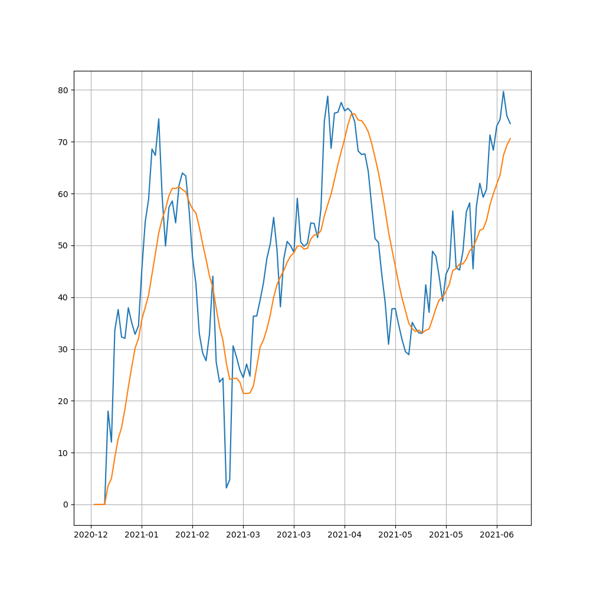

27 Jun 2021
Financial news
It is so important statemennts for study stock.
I’m simply check only headline and summary.
It is expected to study natural language processing (NLP) to future :)
Class code
# class_Strategy.py
# import yahoo_fin import news as ynews
class NLPStrategy:
def __init__(self, url, etfname, Offline = False):
self.url = url
self.etfname = etfname
self.Offline = Offline
def get_news_title(self, ticker = 'AAPL'):
if self.Offline == True:
url_news = self.url+'/data_origin/FS_'+self.etfname+'_title.json'
with open (url_news, 'r') as f:
title = json.load(f)
else:
title = []
news = ynews.get_yf_rss(ticker)
for k,v in enumerate(news):
title.append(v['title'])
return title
def get_news_summary(self, ticker = 'AAPL'):
if self.Offline == True:
url_news = self.url+'/data_origin/FS_'+self.etfname+'_summary.json'
with open (url_news, 'r') as f:
title = json.load(f)
else:
summary = []
news = ynews.get_yf_rss(ticker)
for k,v in enumerate(news):
summary.append(v['summary'])
return summary
yahoo_fin API is very useful for a lot of sotck’s information. If you are interesting this api please check and use page
I choose data list divided online and offline.
- Online test can download only one ticker and then gather using loop in main code.
- Offline test can download index stock after pre-download below code for choice.
Choice Ticker
import json
import pandas as pd
import yahoo_fin.stock_info as yfs
from yahoo_fin import news as ynews
from tqdm import tqdm
def main(stock_list):
etf_list = yfs.tickers_dow()
if stock_list == 'dow':
etf_list = yfs.tickers_dow()
filename = 'dow'
elif stock_list == 'sp500':
filename = 'sp500'
etf_list = yfs.tickers_sp500()
elif stock_list == 'nasdaq':
filename = 'nasdaq'
etf_list = yfs.tickers_nasdaq()
elif stock_list == 'other':
filename = 'other'
etf_list = yfs.tickers_other()
elif stock_list == 'selected':
filename = 'selected'
url = '/Users/hanseopark/Work/stock/data_ForTrading/selected_ticker.json'
temp_pd = pd.read_json(url)
temp_pd = temp_pd['Ticker']
etf_list = temp_pd.values.tolist()
print(etf_list)
error_symbols = []
total_news_title = {}
total_news_summary = {}
for ticker in tqdm(etf_list):
list_title = []
list_summary = []
try:
list_news= ynews.get_yf_rss(ticker)
for k,v in enumerate(list_news):
list_title.append(v['title'])
list_summary.append(v['summary'])
except:
error_symbols.append(ticker)
total_news_title[ticker] = list_title
total_news_summary[ticker] = list_title
#print(total_news_title)
#print(total_news_summary)
print(error_symbols)
url_title = '/Users/hanseopark/Work/stock/data_origin/FS_{0}_title.json'.format(filename)
url_summary = '/Users/hanseopark/Work/stock/data_origin/FS_{0}_summary.json'.format(filename)
with open (url_title, 'w') as f:
json.dump(total_news_title, f)
with open (url_summary, 'w') as f:
json.dump(total_news_summary, f)
## temp reading
# with open (url, 'r') as f:
# temp = json.load(f)
# print(temp)
if __name__ == '__main__':
s= input("Choice of stock's list (dow, sp500, nasdaq, other, selected): ")
print("News' title and summary of stcok in {0} at yahoo finance".format(s))
main(stock_list=s)
This code only needs for offilne test.
Conclusion
Let us know how to download fincancial news.
I have been steuding to make model for stock using many startegy curruntly.
If you want to use this code, I’m very sorry that you should change code and make directory for data a little bit.
I should appreciate and refer for many blog on google. Thanks a lot.
If you satisfied this post you should check Github and please Star :)
26 Jun 2021
Relative Strength index (RSI)
It’s famouse for secondary indicator of stock’s market. This is presented by variance for changing upper and down.
It has tendency if it decrease, it is creasing and also if it crease, it is decresing.
Recently it should have been not true surely. However, it has been importnat index for advance afterwards.
Class code
Anyway, this is presented how to calculate the RSI.
# classRSI.py
import numpy as np
import pandas as pd
import pandas_datareader as pdr
class Stocks:
def __init__(self, symbol, start_day, end_day):
self.symbol = symbol
self.start_day = start_day
self.end_day = end_day
def calcRSI(self, period=14):
df = pdr.DataReader(self.symbol, 'yahoo',self.start_day, self.end_day)
date_index = df.index.astype('str')
U = np.where(df.diff(1)['Adj Close'] > 0, df.diff(1)['Adj Close'], 0)
D = np.where(df.diff(1)['Adj Close'] < 0, df.diff(1)['Adj Close'] * (-1), 0)
AU = pd.DataFrame(U, index=date_index).rolling(window=period, min_periods=1).mean()
AD = pd.DataFrame(D, index=date_index).rolling(window=period, min_periods=1).mean()
RSI = AU/ (AD+AU) * 100
df.insert(len(df.columns), 'RSI', RSI)
df.insert(len(df.columns), 'RSI signal', df['RSI'].rolling(window=9, min_periods=1).mean())
return df
RSI needs variance of upper and down with average of this. And It is calculated
RSI = Average of Upper / (Average of Upper + Average of Down) * 100
Caculating RSI signal which is calculated moving avereage for RSI, it’s comparing with two indexs.
Main code of plotting
# PlotRSI.py
import numpy as np
import pandas as pd
import pandas_datareader as pdr
import datetime
import matplotlib.pyplot as plt
import matplotlib.ticker as ticker
from classRSI import Stocks
def main():
td_1y = datetime.timedelta(weeks=52/2)
today = datetime.datetime.now()
start_day = today - td_1y
symbol = input('Write ticker name like aapl: ') #^IXIC
stock = Stocks(symbol, start_day, today)
df= stock.calcRSI()
index = df.index.astype('str')
fig = plt.figure(figsize=(10,10))
ax_main = plt.subplot(1,1,1)
def x_date(x,pos):
try:
return index[int(x-0.5)][:7]
except IndexError:
return ''
# For figure
ax_main.xaxis.set_major_locator(ticker.MaxNLocator(10))
ax_main.xaxis.set_major_formatter(ticker.FuncFormatter(x_date))
ax_main.plot(index, df['RSI'], label='RSI')
ax_main.plot(index, df['RSI signal'], label='RSI signal')
plt.grid()
plt.show()
if __name__ == "__main__":
main()
It is simply calculating for start day to today and plot

Typical ticker is AAPL(Apple). This figure is presented at 2021-06-26.
you just know that this plot what is mean :)
Model, Selection
For using RSI, we can make model and select ticker in index (Dow, S&P500 etc) ?
I have simple idea to use RSI value of down to up and up to down.
- It is true that RSI value is under 30?
In my case, I have choose selected data by Bollinger band’s model. This model is explained this post which is also important finance index.
# modelRSI.py
import numpy as np
import pandas as pd
import datetime
from tqdm import tqdm
from classRSI import Stocks
def main(stock_list, day_init=datetime.datetime(2020,1,1), today=datetime.datetime.now()):
print(stock_list)
selected_ticker = []
for ticker in tqdm(stock_list):
stock = Stocks(ticker, start_day, today)
df = stock.calcRSI()
df_recent = df.iloc[-1:]
value_RSI = float(df_recent['RSI'])
value_RSI_signal = float(df_recent['RSI signal'])
down = 40
if value_RSI < down:
if value_RSI < value_RSI_signal:
selected_ticker.append(ticker)
print(selected_ticker)
url = '/Users/hanseopark/Work/stock/data_ForTrading/selected_ticker.json'
df = pd.DataFrame(selected_ticker, columns=['Ticker'])
df.to_json(url)
if __name__ == '__main__':
td_1y = datetime.timedelta(weeks=52/2)
today = datetime.datetime.now()
start_day = today - td_1y
url = '/Users/hanseopark/Work/stock/data_ForTrading/{0}_TickerList.json'.format(today.date())
s_list = pd.read_json(url)['Ticker'].values.tolist()
main(stock_list = s_list, day_init = start_day)
If you change var of down like 30 to 40, you should get many ticker beyond hard condition.
Conclusion
Let us know what is RSI and how to caclulate with figure. And then we are going to find ticker using this model :)
If you want to use this code, I’m very sorry that you should change code and make directory for data a little bit.
I should appreciate and refer for many blog on google. Thanks a lot.
If you satisfied this post you should check Github and please Star :)
25 Jun 2021
Bollinger Band (BB)
The bollinnger band is mening of standard deviation with calculation of moving average during 20, 60, and 120.
It has been known to have tendecy narrow to wide and wide to narrow again.
Additionally, If price of stock is over the line by BB, It has tendecy to be upper the line and If this is under the linne by BB, It has tendecu to be lower.
This is presented with price of stock and moving average line with Python.
It is needed to be downlaod on the web site. We have very useful method using pandas_datareader API.
pip install pandas-datareader
Class code
Anyway, the code of class is below.
# classBB.py
import pandas as pd
import pandas_datareader as pdr
import datetime
class Stocks:
def __init__(self, symbol, start_day, end_day, url = '', Offline=False):
self.symbol = symbol
self.start_day = start_day
self.end_day = end_day
self.url = url
self.Offline = Offline
def get_price_data(self):
if (self.Offline == True):
url_price = self.url+'/FS_{0}_Value.json'.format('sp500') # If you have nasdaq stocks, you'd like to choose nasdaq stocks rather than sp500 or dow to have many data sets
combined_price = pd.read_json(url_price)
df = combined_price[combined_price.Ticker.str.contains(self.symbol)]
df_price = df.copy()
df_price = df_price.set_index('Date')
df_price = df_price.drop(['Ticker'], axis=1)
df_price = df_price.loc[self.start_day : self.end_day]
else:
df_price = pdr.DataReader(self.symbol, 'yahoo',self.start_day, self.end_day)
return df_price
def with_moving_ave(self):
df_price = self.get_price_data()
ma5= df_price['Adj Close'].rolling(window = 5, min_periods=1).mean()
ma20= df_price['Adj Close'].rolling(window = 20, min_periods=1).mean()
ma60= df_price['Adj Close'].rolling(window = 60, min_periods=1).mean()
ma120= df_price['Adj Close'].rolling(window = 120, min_periods=1).mean()
std = df_price['Adj Close'].rolling(window = 20, min_periods=1).std()
bol_upper = ma20 + 2*std
bol_down = ma20 - 2*std
df_price.insert(len(df_price.columns), 'MA5', ma5)
df_price.insert(len(df_price.columns), 'MA20', ma20)
df_price.insert(len(df_price.columns), 'MA60', ma60)
df_price.insert(len(df_price.columns), 'MA120', ma120)
df_price.insert(len(df_price.columns), 'Std', std)
df_price.insert(len(df_price.columns), 'bol_upper', bol_upper)
df_price.insert(len(df_price.columns), 'bol_down', bol_down)
return df_price
The function get_price_data() is meaning to be download for online by yahoo finance for real time and another method to be analyzied for offline by local after download the same method. It is explaind later :)
Main Code of Ploting
# PlotBB.py
import pandas_datareader as pdr
import pandas as pd
import matplotlib.pyplot as plt
import matplotlib.ticker as ticker
from matplotlib import gridspec
from mplfinance.original_flavor import candlestick2_ohlc
import datetime
from classBB import Stocks
def main():
td_1y = datetime.timedelta(weeks=52/2)
#start_day = datetime.datetime(2019,1,1)
#end_day = datetime.datetime(2021,5,1)
today = datetime.datetime.now()
start_day = today - td_1y
# To test just a ticker for making class
symbol = input('Write ticker name like AAPL: ')
url_data = '/Users/hanseopark/Work/stock/data_origin/'
offline_test = False
stock = Stocks(symbol, start_day, today, url=url_data, Offline= offline_test)
## For figure
df = stock.with_moving_ave()
index = df.index.astype('str')
fig = plt.figure(figsize=(10,10))
gs = gridspec.GridSpec(2,1,height_ratios=[3,1])
ax_main = plt.subplot(gs[0])
ax_1 = plt.subplot(gs[1])
def x_date(x,pos):
try:
return index[int(x-0.5)][:7]
except IndexError:
return ''
# ax_main
ax_main.xaxis.set_major_locator(ticker.MaxNLocator(10))
ax_main.xaxis.set_major_formatter(ticker.FuncFormatter(x_date))
ax_main.set_title(symbol+' stock', fontsize=22 )
#ax_main.set_xlabel('Date')
ax_main.plot(index, df['MA5'], label='MA5')
ax_main.plot(index, df['MA20'], label='MA20')
ax_main.plot(index, df['MA60'], label='MA60')
ax_main.plot(index, df['MA120'], label='MA120')
ax_main.plot(index, df['bol_upper'], label='bol_upper')
ax_main.plot(index, df['bol_down'], label='bol_down')
ax_main.fill_between(index, df['bol_down'], df['bol_upper'], color = 'gray')
candlestick2_ohlc(ax_main,df['Open'],df['High'],df['Low'],df['Close'], width=0.5, colorup='r', colordown='b')
ax_main.legend(loc=2)
# ax_1
ax_1.xaxis.set_major_locator(ticker.MaxNLocator(10))
ax_1.xaxis.set_major_formatter(ticker.FuncFormatter(x_date))
ax_1.set_xlabel('Date')
ax_1.set_ylabel('Std')
ax_1.plot(index, df['Std'], label='Std')
mean = df['Std'].mean()
ax_1.hlines(y=mean, xmin=index[0], xmax=index[-1], colors='red')
plt.grid()
plt.show()
if __name__ == '__main__':
main()
To be choice from start day to end day and if it checks offline test or not
For figure, using gridspec to be seperated canvas and candlestick2_ohlc that has advatage to make candlestick plot easily.
Any other plot library is easily explaind by google :) just search.

Typical ticker is AAPL(Apple). upper figure is presented price with BB and down figure is presented by only standard deviation at 2021-06-25.
Model, Selection
For using Bolliner band, we can make model and select ticker in index (Dow, S&P500 etc)?
I have simple idea to use standard deviation with recent price and prior to price.
- Is it true currunt standard deviation over mean of standard deviation during period?
- It is true recent price below upper line of BB?
- Is it true this ticker is rising?
- price of today over price of yesterday
- price of yesterday over price of the day befor yesterday
If upper the condition is satisfied, I think that selected ticker has high probabily of rising to be future.
In my case I make the code for modeling and selection below.
To download index using yahoo_fin API. This is very useful to download price, financial statements and others.
# modelBB.py
import pandas as pd
import yahoo_fin.stock_info as yfs
import datetime
from tqdm import tqdm
from classBB import Stocks
def main(stock_list, day_init=datetime.datetime(2020,1,1), today=datetime.datetime.now()):
# Get list of Dow tickers
dow_list = yfs.tickers_dow()
filename = ''
if stock_list == 'dow':
dow_list = yfs.tickers_dow()
filename = 'dow'
elif stock_list == 'sp500':
filename = 'sp500'
dow_list = yfs.tickers_sp500()
elif stock_list == 'nasdaq':
filename = 'nasdaq'
dow_list = yfs.tickers_nasdaq()
elif stock_list == 'other':
filename = 'other'
dow_list = yfs.tickers_other()
print(dow_list)
selected_ticker = []
for ticker in tqdm(dow_list):
stock = Stocks(ticker, start_day, today)
df = stock.with_moving_ave()
index = df.index.astype('str')
mean = df['Std'].mean()
df_day_ago_ago = df.iloc[-3]
df_day_ago = df.iloc[-2]
df_recent = df.iloc[-1:]
#print(df_day_ago)
#print(df_recent)
value_day_ago_ago = float(df_day_ago_ago['Adj Close'])
value_day_ago = float(df_day_ago['Adj Close'])
value_recent = float(df_recent['Adj Close'])
upper_recent = float(df_recent['bol_upper'])
down_recent = float(df_recent['bol_down'])
std_recent = float(df_recent['Std'])
if std_recent < mean and value_recent > value_day_ago and value_day_ago > value_day_ago_ago and value_recent < upper_recent:
selected_ticker.append(ticker)
url = '/Users/hanseopark/Work/stock/data_ForTrading/{0}_TickerList'.format(today.date())
df = pd.DataFrame(selected_ticker, columns=['Ticker'])
#df.columns = ['Ticker']
df.to_json(url+'json')
df.to_csv(url+'csv')
print(df)
return df
if __name__ == '__main__':
s_list= input("Choice of stock's list (dow, sp500, nasdaq, other): ")
td_1y = datetime.timedelta(weeks=52/2)
#start_day = datetime.datetime(2019,1,1)
today = datetime.datetime.now()
start_day = today - td_1y
main(stock_list = s_list,day_init = start_day)
Conclusion
Let us know what is BB (Bollinger Band) and how to calculate with figure. And then we are going to find ticekr using this model.
If you want to use this code, I’m very sorry that you should change code and make directory for data a little bit.
I should appreciate and refer for many blog on google. Thanks a lot.
If you satisfied this post you should check Github and please Star :)